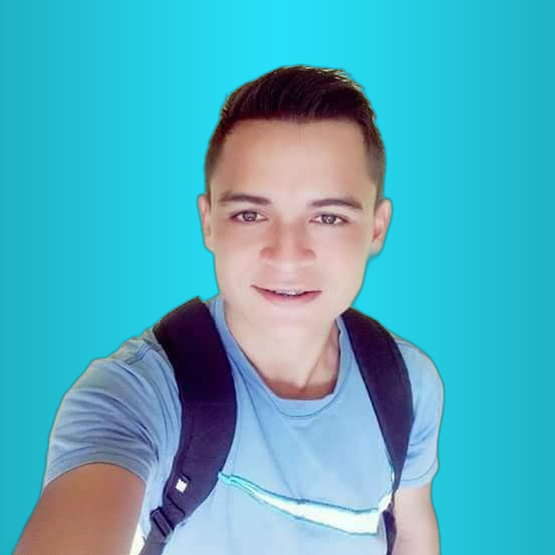

Olá,
Eu sou Adrian Caldas Pó
Crio aplicações web que proporcionam uma ótma esperiência de navegação para o usuário.
Principal
Esta pagina que vocẽ se encontra, contendo um resumo de todo o site.
Uma minibio de minha vida proficional com um resumo de minhas habilidades.
Projetos
Os trabalhos mais relevantes em que atuei como designer e/ou desenvolvedor web.
Contato
Os canais para vocẽ me encontrar em redes sociais, e-mais e telefone.